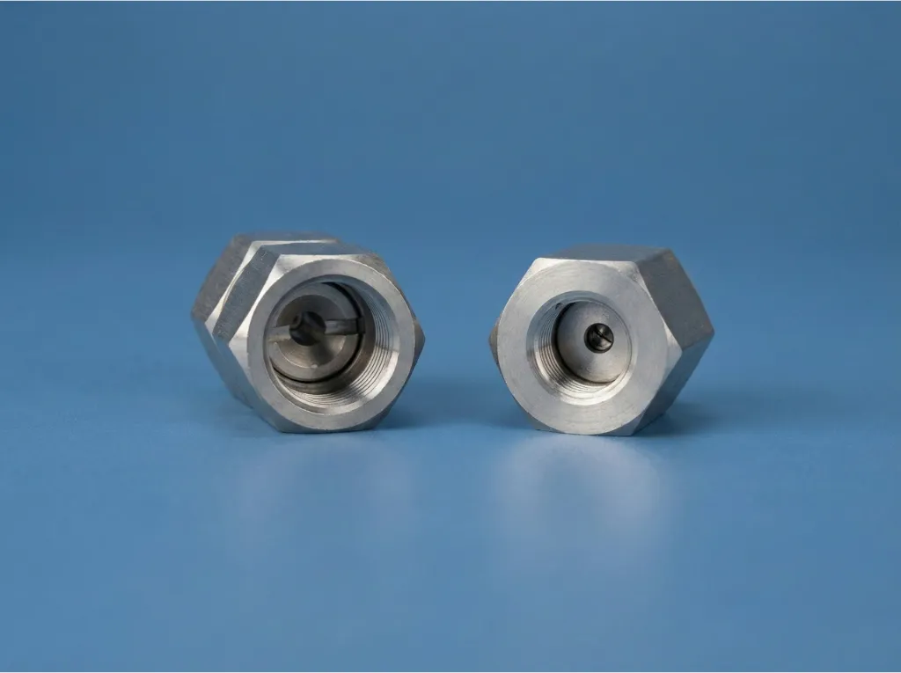
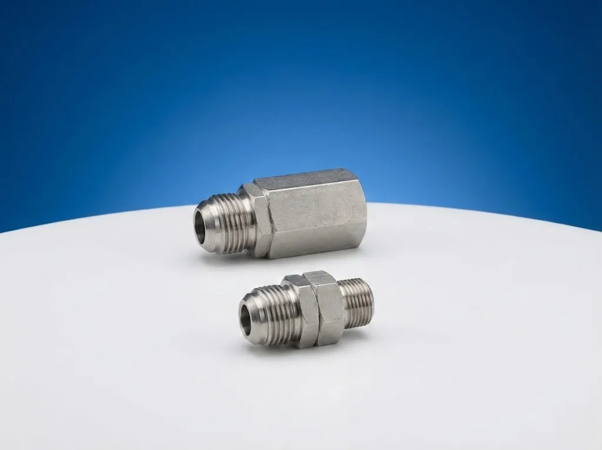

Self Servis Oto Yıkama Pervanesi Boom Çiftli & Tekli Modeller
Boom çiftli pervane, boom tekli Z pervane, tır yıkama pervanesi ve döner rekor çeşitleri. Self servis istasyonlar için krom boom pergel sistemleri. %100 yerli üretim, fabrika fiyatlarıyla.
Model seçimi için oto yıkama pervanesi karşılaştırma sayfamızı veya boom pervane kısa rehberini ziyaret edin.
Ürün listesi

Tır Yıkama Pervanesi
Büyük araçların temizliği için özel olarak tasarlanan Tır Yıkama Pervanesi, yenilikçi açılır kapanır sistemi sayesinde maksimum esneklik sunar.
Tır Yıkama Pervanesini İncele
Oto Yıkama Pervanesi Boom Çiftli
Self servis istasyonlar için boom çiftli krom pergel sistemi. Jet köpük + normal yıkama çift fonksiyon, 4 keçeli sızdırmaz döner rekor.
Detaylı İncele
Oto Yıkama Pervanesi Boom Tekli Z
Self servis oto yıkama istasyonları için boom tekli Z krom pergel. 154cm Z kol tasarımı, 360° döner hortum mekanizması, 15 yıllık tecrübe.
Detaylı İncele
1/4 Yıkama Pervanesi Döner Rekor
Self servis oto yıkama sistemlerinin verimliliğini artırmak için tasarlanan 1/4 Yıkama Pervanesi Döner Rekoru, piyasa standartlarına tam uyumlu yapısıyla yüksek performans sağlar.
Detaylı İncele
Yıkama Pervanesi Uç Rekoru
Self servis yıkama sistemlerinin uç noktalarında mükemmel performans sağlayan Yıkama Pervanesi Uç Rekoru, yüksek basınçlı su akışı altında dahi takılmadan dönebilen özel bir teknolojiye sahiptir.
Detaylı İncele
Araç Yıkama Pervanesi Tabanca Döner Rekoru
Self servis yıkama esnasında yaşanan hortum karışıklığına son veren Araç Yıkama Pervanesi Tabanca Döner Rekoru, kullanıcıya 360 derece hareket kabiliyeti kazandırır.
Detaylı İnceleKullanım Senaryosuna Göre Hızlı Geçiş
Self servis istasyon tipinize göre doğru ürüne ve destekleyici rehbere tek ekrandan ulaşın.
Ürün Seçimi Sık Sorulan Sorular
Kategori seviyesinde en çok sorulan seçim sorularına kısa cevaplar.
Self servis istasyon için tekli mi çiftli pervane seçilmeli?
Tek hortumlu kabinlerde boom tekli Z model yeterlidir. Köpük ve su hattının aynı kabinde kullanıldığı yoğun self servis istasyonlarında boom çiftli model daha uygundur.
Yedek parçalar ürünlerden ayrı alınabilir mi?
Evet. 1/4 döner rekor, yıkama pervanesi uç rekoru ve tabanca döner rekoru gibi parçalar ayrı olarak da tedarik edilebilir.
Tır yıkama pervanesi ne zaman gerekir?
Tır, kamyon ve otobüs gibi yüksek araçların yıkandığı hatlarda standart binek çözümler yerine teleskopik erişim sunan tır yıkama pervanesi tercih edilmelidir.